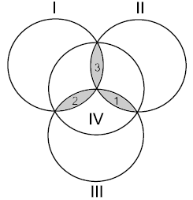

ural-1792 Hamming Code
题目：

1792. Hamming Code
Time limit: 1.0 second
Memory limit: 64 MB
Let us consider four disks intersecting as in the figure. Each of the three shapes formed by the intersection of three disks will be called a petal.
Write zero or one on each of the disks. Then write on each petal the remainder in the division by two of the sum of integers on the disks that contain this petal. For example, if there were the integers 0, 1, 0, and 1 written on the disks, then the integers written on the petals will be 0, 1, and 0 (the disks and petals are given in the order shown in the figure).
This scheme is called a Hamming code. It has an interesting property: if you enemy changes secretely any of the seven integers, you can determine uniquely which integer has been changed. Solve this problem and you will know how this can be done.
Problem illustration
Input
The only line contains seven integers separated with a space, each of them being zero or one. The first four integers are those written on the disks in the order shown in the figure. The following three integers are those written on the petals in the order shown in the figure
Output
Output one line containing seven integers separated with a space. The integers must form a Hamming code. The set of integers may differ from the input set by one integer at most. It is guaranteed that either the input set is a Hamming code or a Hamming code can be obtained from it by changing exactly one integer.
Samples
| input | output |
| 0 1 0 1 1 0 1 | 0 1 0 0 1 0 1 |
| 1 1 1 1 1 1 1 | 1 1 1 1 1 1 1 |
代码：
1 |
|
解析&吐槽：
每个碟片和碟片的重叠处都有一个数字，碟片的数字是 0 或 1，重叠处的数字是叠在此处的三个碟片 上数字的和除以 2 的余数。现在给出碟片和重叠处的数字，如果不符合要求，则可以改动一个数字 （碟片或重叠处的数字均可）使之符合要求，输出改正后的数字。
这道题很简单，只需要用穷举就可以做了。因为只需要改动一个数字，最多就只有七种情况，不需要 消耗多少时间。

本作品采用 署名-相同方式共享 4.0 国际 进行许可。欢迎转载、使用、重新发布，但务必保留文章署名 “不科学的科学君” (Liu233w) 与博客链接： https://liu233w.github.io ，基于本文修改后的作品务必以相同的许可发布。如有任何疑问，请 与我联系 。